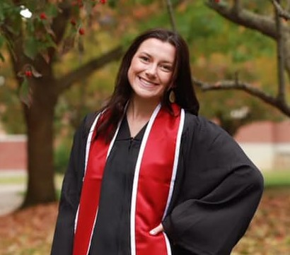

Lauryn Lovell's Personal Website | |
Home
|
About Me
I taught 5th grade social studies this year at Mt. Vernon Elementary in the Rockcastle County school district. Next year, I get to stay in 5th grade, but I will be teaching reading! I love to read and I can't wait to instill a passion for reading in my students with this new subject area! I am currently taking graduate classes through EKU to become a library media specialist. I love teaching and want to do it for a long time, but I also look forward to someday having my own school library to call home! Now that you know a little more about me, you can navigate my website to learn more! By using the menu, you will discover: Visit my library website! |
| Lauryn Lovell, 2023 | |